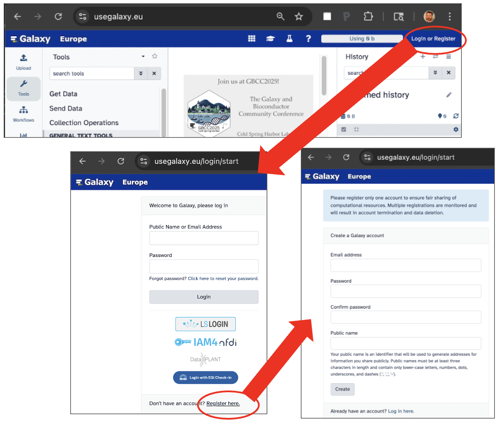
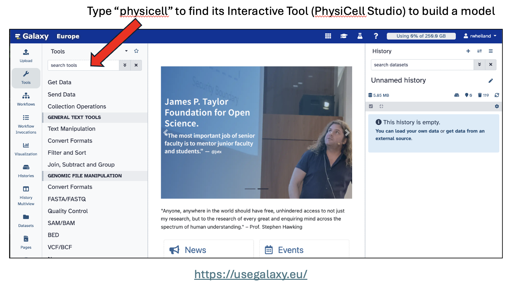
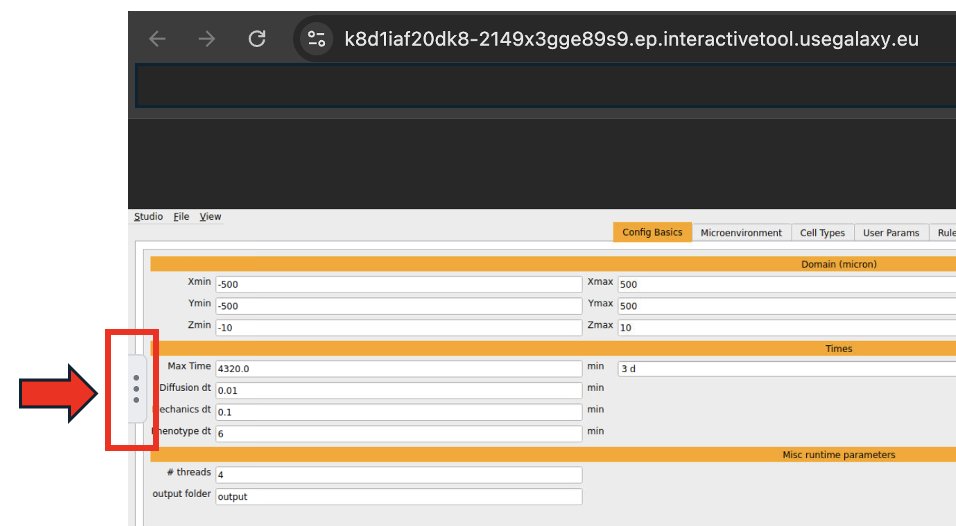
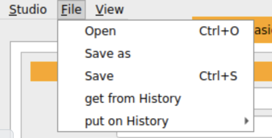
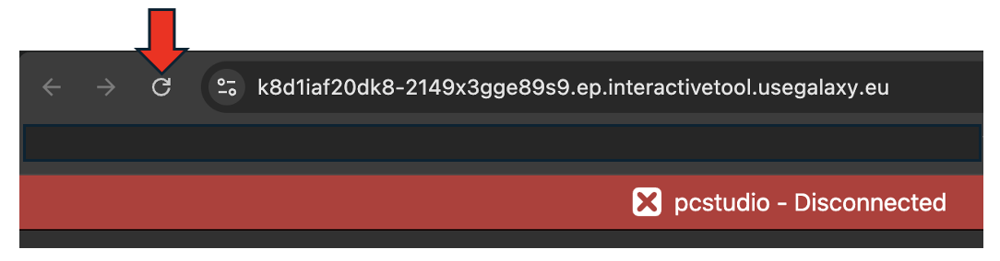
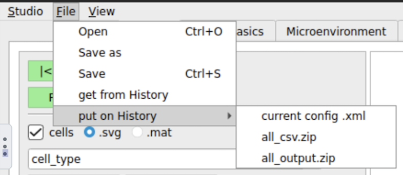
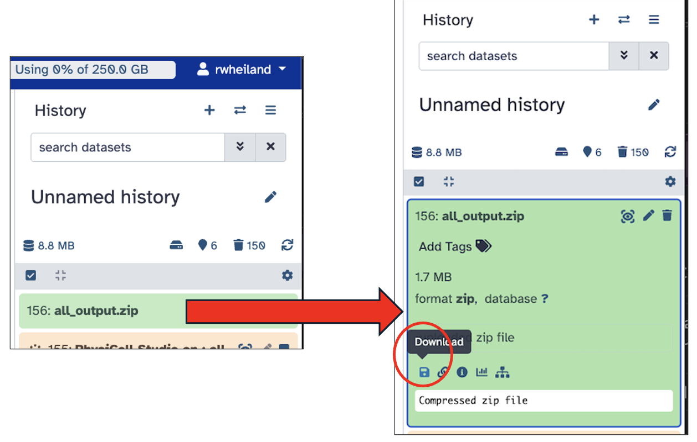
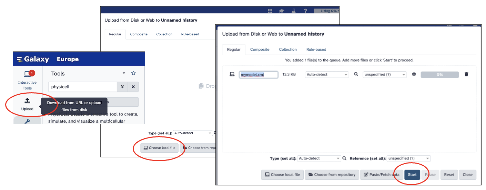

Galaxy¶
NOTE: This page continues to evolve. We welcome feedback on our Slack channel
Galaxy is a well known, Web-based platform of tools, aimed primarily at bioinformaticians, but has broadened in scope over the years. With generous help from the Galaxy community, we have ported PhysiCell Studio to run as an Interactive Tool. Currently, it is running on both the ORG and EU instances of Galaxy. If you do not yet have an account, register for one - it is free and requires very little information. Once you have an account, login and follow the steps below to run PhysiCell Studio.
Initial comments¶
- currently only 2D models are allowed
- when you run PhysiCell Studio, it starts from scratch, i.e., it does not retain the results from a previous session. Therefore, if you want to save results from a session, e.g., a model (.xml) or its initial conditions or rules (.csv), or a simulation’s results (in the /output directory), you will need to explicitly do that before quitting PhysiCell Studio.
- some functionality found in the desktop version is missing in the Galaxy version
- a session remains active for about 24 hours
- there is only one /output directory for simulation results
- when you “Run” a simulation (in the Run tab), the current .xml model config file will be overwritten with any changes to model parameters, and all existing files in the /output directory will be deleted and new simulation results will be written to /output (but will not persist across multiple Studio sessions)
- output results (5 files) will be automatically saved only when one quits the tool (“Studio menu -> Quit”)
- to save results manually, use the “File -> put on History” menu item.
Register for a Galaxy account¶
- Registering for a Galaxy account should be straightforward. Try to register at https://usegalaxy.org/ and if you have problems, try https://usegalaxy.eu/ .
Login and start PhysiCell Studio¶
After successfully registering for and getting an account on Galaxy, you are ready to use its tools. The one of interest for this tutorial is PhysiCell Studio.
- the Galaxy Tools column lists all available tools. You can search for “PhysiCell Studio”
- the tool takes some time (maybe a minute or two) to become active
- notice that the tool “produces 5 outputs”. However, as noted in the initial comments above, these files only get generated if/when the user quits the tool. To save results during a session, use “File -> put on History”.
- after the “Open” link appears, click it
Note
If the “Open” link seems to take too long to appear, check to see if you have a previous Studio or another Interactive Tool already running (select the “Interactive Tools” icon in the left column). You are not allowed more than one Interactive Tool to run simultaneously.
- click the Run Tool to open PhysiCell Studio in an adjacent tab of your browser
Studio GUI settings¶
{kind=link}
- when the Studio appears in its own browser tab, its widgets will appear too small. To remedy this, click the “3 vertical dots” icon on the left border. It will display settings for the GUI.
{kind=link}
- then select the “Scaling Mode” dropdown menu and select “Remote Resizing”. This should improve the overall usability of the GUI.
- to run the default simulation, click the Run tab and press the “Run simulation” button.
Studio overview¶
At this point, you should be able to follow instructions elsewhere for basic use of the Studio. https://physicell-studio.readthedocs.io/en/latest/guide.html#config-basics . HOWEVER, you will want to return to this page for Galaxy-specific instructions, especially regarding loading files and saving simulation results.
{kind=link}
- to open a different model that comes with PhysiCell Studio: File -> Open
{kind=link}
{kind=link}
- select one of the .xml files to explore a different model (the default, PhysiCell_settings.xml, is identical to template.xml)
- save various output results to the Galaxy History (found on the main Galaxy browser tab)
Reconnect the Studio session¶
{kind=link}
- if you see “pcstudio - Disconnected”, it should automatically reconnect (in the latest version of Galaxy); however, if not, just refresh this page in your browser to manually reconnect.
Saving results locally¶
Output results from building a model and running a simulation will automatically be saved to the Galaxy History 1) only when the user explicitly quits PhysiCell Studio (Studio -> Quit) or 2) the Studio has exceeded its maximum Galaxy run time for a tool (~24 hours).
If you want to save intermediate results, e.g., the current model definition (.xml), any initial conditions (.csv), any rules (.csv), or the entire /output results (.xml, .svg, .mat, .txt), then you can use the “File -> put on History” menu to select those options.
 {kind=link}
{kind=link}
- e.g., File -> put “all_output.zip” on the Galaxy History. From the History panel back on the main Galaxy tab, you can select its entry to expand it and then click the leftmost “Download” icon. It will download a file with a default name of Galaxy<ID#>-[all_output.zip].zip
Upload a local file¶
Uploading a local file on your computer to be used in the Galaxy PhysiCell Studio is a bit more involved than saving results. This has to do with the fact that Galaxy thinks of files in the History as data stores with a unique ID, rather than having a unique filename. So, while it is easy to upload a local file to the History, accessing it from the Studio requires a few steps.
{kind=link}
- on the main Galaxy interface, use the Upload tool to get a file from your local computer. It will appear in the Galaxy History. You may want to use this to upload a model config file (.xml), or initial conditions (.csv), or rules for cell signals/behaviors (.csv).
{kind=link}
- in the Galaxy History, the new file will appear in 3 stages (a job starts (gray) to upload it, the job runs (orange), the job completes (green))
{kind=link}
- in the Studio, use “File -> get from History” to get this file (by ID). Note that a “get” will write the file to the /import directory. Therefore, enter /import into the text widget next to the dir button then press the button to show the contents of that directory.
The steps to get a model config file (.xml) from the History and use it in the Studio are:
- “File -> get from History” : e.g., “get(133)” and it will save the file to “/import/133”
- “File -> Open” that file; verify it displays correctly in the Studio.
- optionally, “File -> Save as” to /opt/pcstudio/config/model133.xml ; then re-Open that
- “File -> put on History -> current config .xml” (will put model133.xml there)